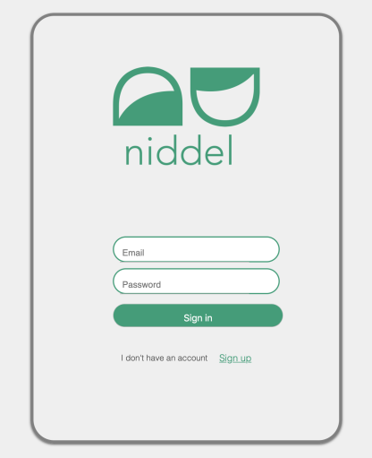
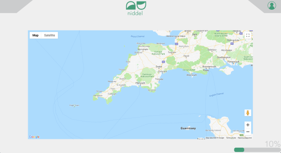
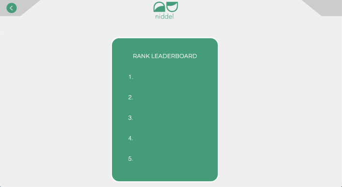
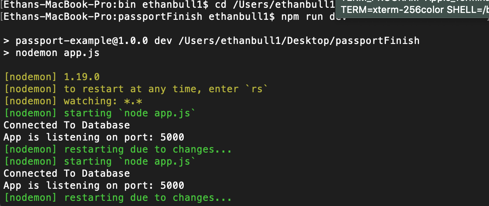

To get started with the module we had been given a brief based on the criteria set for us and all submission details. Following on from this I had started to explore what the different type of developer jobs were and looked further into what i thought will benefit me the most. The choices were 'Front end', 'Back end' and 'Full Stack'.
I went with the job as being a 'full stack developer' as i thought the experience of learning new skills in the back end service would be a good idea to build myself up more confidently as a future developer.
From this i had then started to look at what I could use as for initial ideas. I liked the ideas I had used from the previous module 'INDE501- Net Experience' as I thought the construct and functionality of the idea would work well with being a front end and back end service as it consists of a login screen, interactive screen and a share screen.
In this week we started to look at languages we could use to start building our application such as HTML, CSS and SASS. Just going through the basics of what is HTML and how can CSS work with HTML, this led into a wider look at what is SASS.
So I had learnt that SASS is really helpful to make the style of your CSS look more cleaner and structure more carefully. SASS can help with the functionality of managing your stylesheets more effectively.
From this I had then started to think how would i build my application through the use of HTML and CSS. I would have to know what scripts and APIs i would have to use, such as how would the user be able to navigate around the application and how would it be interactive enough so that the user would have a good UX from it. As well for the API, i would have to think what will be the best to get an interactive map where the user can simply click on a location and store it under the login.
I started to look at google maps as an API source to embed into my application as I thought this will be the best kind of interactive map where the user can simply use to zoom in and zoom out of a location effectively.
Week 3
Following on from the exploration of how I would construct my application together. I then started to start working on my HTML page and just setting up a login screen also using CSS to style it all together.
As you can see from the image below, this is my initial design of what i wanted the log in screen to look like. This log in screen was what i wanted the user to see first when they load up the application. Personally I think this log in screen works effectively with what i'm trying to achieve. A clean and minimalistic design where the UX is in a friendly manner.

In this week I had moved on from the login screen and started to work on my main interactive screen where the user can simply record and store their saved locations.
This screen took a bit more attention as i had to import an api from google maps and use their map as a way to be interactive and engaging. To do this I had to sign up to 'google maps platform' and navigate around the site to collect my own API from them. Once I did and imported into it my HTML page, I had then started to work on the positioning and size of the map, so that it would be most appropriate for the site. The map seemed to fit in just right and looked very user friendly. All I had to do after this was just figure out a way how the user can click on a certain location and a marker will pop up and it would be stored.

Later in the week I had then started to work on a different screen so that the user would be able to see how many points he/she has and then also compare with how many points their friends also then have a choice to share on social media platforms.

Within this week, I had then started to look at how would I operate in the back end side of the application. By this I had started to work with mongoDB and node.js, This had allowed me to use a database against my application so I can start to record stuff and store information.
For this part of the project, I began to struggle with how I would use these services to operate in my application. As I had very little experience in this side of developing, this part definitely took the longest and most demanding.
To get my application started with node.js, first of all I had to run a couple of terminal commands. The key ones being, nodemon and npm. With the use of installing node.js to my computer i was able to use all commands.

Week 6
start to look at other softwares such as heroku and phone gap
Week 7
finalising all work and making sure it is all completed for hand in.